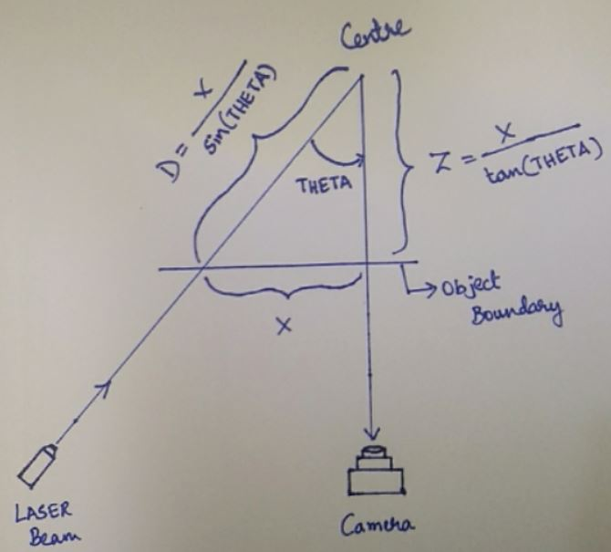
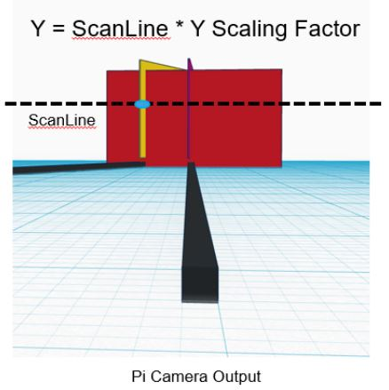

Quality checking is essential in the production of any product. In manufacturing, quality control ensures that customers receive defect-free products that meet their needs. Our aim is to create a low-cost and efficient prototype system that detects defects in an object using image processing techniques and estimates the size of such defects.
Defects in manufacturing, such as dimensional inaccuracies, can occur during production. Traditional methods to detect these defects are often expensive and slow. Our goal is to develop a cost-effective and efficient method to detect these defects early in the manufacturing process.
We aim to develop an automated system that detects and labels dimensional defects in objects. The system must be accurate, cost-effective, and easy to operate, making it suitable for deployment in production lines.
We present a real-time, highly automated tool for defect detection using image processing. The system will perform real-time image acquisition, processing, and classification, allowing for the detection and classification of common dimensional defects in manufactured products.
The system will take pictures of an object in three dimensions, process the images, compare them with reference images, detect defects, and suggest methods for resolving any flaws.
Machine vision (MV) is used in automatic inspection, process control, and robot guidance. The technology provides computer-understandable descriptions of objects from images. Automated visual inspection systems must discover and classify defects in product images quickly and robustly. Our project builds upon existing methods by focusing on 3D object inspection, where traditional 2D methods fall short.
We use a simple 3D triangulation setup with a line LASER and a camera to scan objects for defects. The LASER line intersects the view direction of the camera at the axis of rotation of the object, allowing us to extract depth-related information.
 Using known angles and scaling factors, we can calculate the depth and dimensions of the object. Images of the object are processed to detect deviations from reference images, identifying defects.